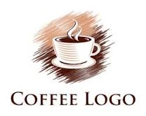

<!-- File này chỉ chứa sidebar, sẽ được nạp vào mọi trang bằng JS (xem script.js).
     Muốn đổi logo, tên, menu... chỉ cần sửa DUY NHẤT file này. -->
<aside class="sidebar">
    <!-- Logo + tên quán -->
    <div class="sidebar-shop">
        
    </div>

    <!-- User đang đăng nhập + chức vụ -->
    <div class="sidebar-user">
        <div class="user-name">Tên</div>
        <div class="user-role">Chức vụ</div>
    </div>

    <div class="sidebar-nav">
        <div class="sidebar-menu">
            <button data-view="tables" class="tab">Bàn</button>
            <button data-view="menu" class="tab" id="navMenu">Menu</button>
            <button data-view="revenue" class="tab" id="navRevenue">Doanh thu</button>
            <button data-view="history" class="tab" id="navHistory">Lịch sử</button>
            <button data-view="staff" class="tab" id="navStaff">Nhân viên</button>
        </div>
    </div>
</aside>
